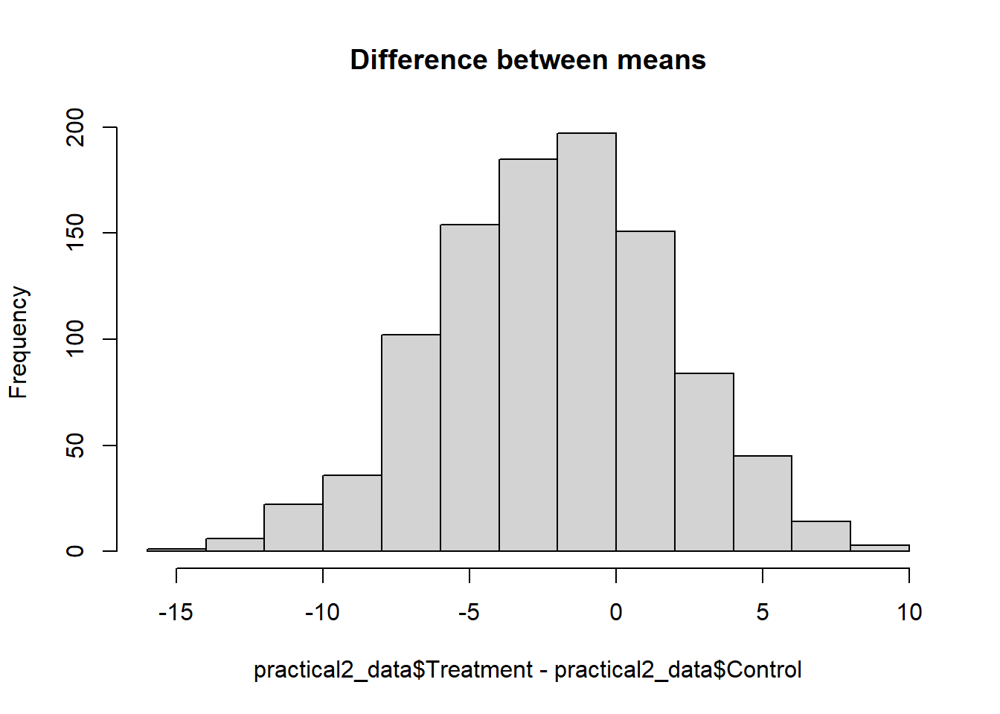
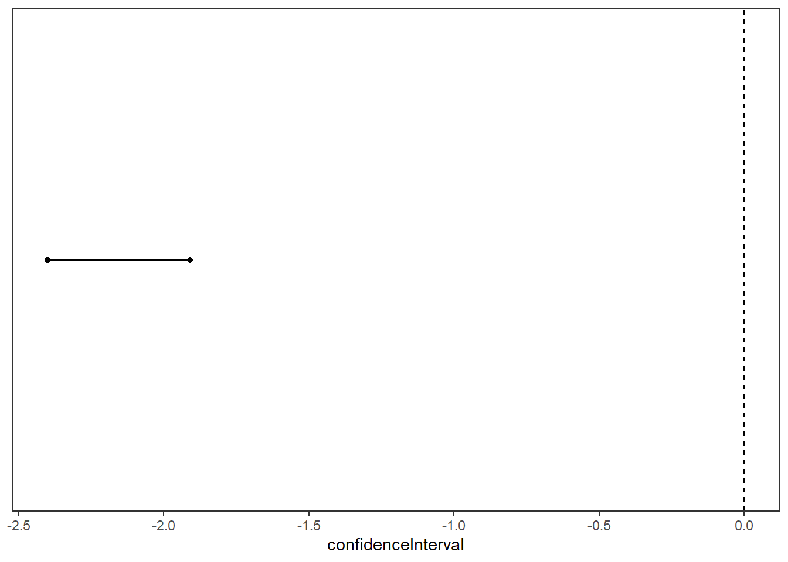

practical2_data <- read.csv("practical2_data.csv")Practical 2 - Confidence intervals, effect size and power
How to approach this practical session
- Have RStudio open and ready to use.
- Be sure to read the contextual information and instructions carefully. This information is necessary to complete the tasks.
- Complete the tasks as you go along - they are labelled “Task”.
- Some of the code you need will be completed, some will be partially completed, some you will need to do yourself. You can copy code examples from this page by clicking on the clipboard icon which appears when you hover over the code examples.
- Buttons to press in your keyboard are shown like this:
Ctrl + S orCmd + S . - Menu items to click in R Studio are shown like this:
File -> Save . Panes or Tabs in R Studio are also shown like this:Environment . - On this page, boxes with a drop down arrow can be collapsed to hide the information inside them. You can also click on the arrow to expand the section.
Download the data for this practical
For this session you will need to download the following dataset: practical2_data.csv
Right click and select
Reminder: Importing data into R
To import data into R, you can use the a command that relates to the type of data you are importing. For example, to import the data in the file practical2_data.csv, you would use the following command:
You can also use the menu to import data. To do this, click on the
Calculate the confidence interval of the difference between means
In our research we are often comparing the difference between 2 means. As such, we are often interested in the confidence interval of this difference.
For example, in our current dataset, we are interested in the difference between the mean of the control group and the mean of the treatment group on an outcome measure. Let’s say that this is a measure of distress, so that lower scores are preferable to higher scores.
However, we want to know more than just the difference between the means. We want to know how confident we can be that the difference between the means is not zero (null hypothesis), given the data we have. We can do this by calculating the confidence interval of the difference between the means.
The first step is to calculate the difference between the means. This is simply mean of group 1 minus the mean of group 2.
1meanDiff <- mean(practical2_data$Treatment) - mean(practical2_data$Control)- 1
- Note that we are using the dollar “$” sign to access the columns of the data frame.
Visualse the difference between the means?
We can visualise the difference between the means by plotting the data. We will learn how to do this in a later session. For now (if you want to), you can just run the code below to see the difference between the means.
hist(practical2_data$Treatment - practical2_data$Control, main = "Difference between means") 
Notice how most of the data seems to be lower than zero. That would mean that the Treatment group has lower scores than the Control group. This is what we would expect, as the Treatment group is supposed to be better than the Control group.
The second step is to calculate the standard error of the difference between the means. This is calculated as:
\[SE_{\bar{x}_1 - \bar{x}_2} = \sqrt{\frac{s_1^2}{n_1} + \frac{s_2^2}{n_2}}\]
where \(s_1^2\) is the variance of group 1, \(s_2^2\) is the variance of group 2, \(n_1\) is the sample size of group 1, and \(n_2\) is the sample size of group 2.
So to calculate this in R, we would:
- get the standard deviation of group 1, divided by the number of participants in group 1,
- do the same for group 2
- add these results together
The code below will start you off, you need to finish it:
# Standard Error of Treatment group
1se1 <- sd(practical2_data$Treatment) / length(practical2_data$Treatment)
2# Standard Error of Control group
3# Add the two together- 1
- This code calculates the standard error of the Treatment group. sd() is the function to calculate the standard deviation. length() is the function to calculate the number of elements in a vector.
- 2
- You need to do the same for the Control group.
- 3
- Then you need to add them together.
The next step is to calculate the confidence interval. This is calculated as:
\[\bar{x}_1 - \bar{x}_2 \pm = 1.96 \times SE_{\bar{x}_1 - \bar{x}_2}\]
where \(\bar{x}_1 - \bar{x}_2\) is the difference between the means, 1.96 is the critical value of t for the given alpha level and degrees of freedom, and \(SE_{\bar{x}_1 - \bar{x}_2}\) is the standard error of the difference between the means.
Where does 1.96 come from?
The critical value for a 95% confidence interval is 1.96. This is because the area under the 95% of the curve of a normal distribution lies between -1.96 and 1.96 standard deviations from the mean. However, this is only true for a large sample size (aprox. >30). For smaller sample sizes, the critical value is larger. For example, for a sample size of 10, the critical value is 2.26. For a sample size of 5, the critical value of is 2.57.
These smaller distributions are called t-distributions. The t-distribution is similar to the normal distribution but it is wider. This means that the critical values are larger for smaller sample sizes. This is where the t-test gets its name from.

To calculate this in R, we would multiply the standard error by 1.96 and:
- subtract this from the difference between the means (to get the lower confidence interval).
- add this to the difference between the means (to get the upper confidence interval).
Task
Calculate the upper and lower confidence intervals for the difference between the means.
The lower confidence interval is:
The upper confidence interval is:
What does the confidence interval tell us?
The confidence interval tells us the range of values that we can be confident that the true value (difference between the means) lies within.
A common misunderstanding about CIs is to say that for a 95% CI, there is a 95% probability that the true population mean lies between the values - this is incorrect.
A correct interpretation is that if we were to repeat the study many times and made confidence intervals for each of the result, then the true population mean would be present in 95% of those confidence intervals.
Importantly: If the confidence interval includes zero, then we cannot reject the null hypothesis. If the confidence interval does not include zero, then we can reject the null hypothesis (at \(\alpha\) = 0.05).
Includes zero?
Imagine a number line that goes from the lower to the upper confidence interval. If you would have to cross zero to get from the lower to the upper confidence interval value, then the confidence interval includes zero.

Does the confidence interval include zero?
Based on the confidence interval you calculated, can we reject the null hypothesis?:
Calculate the effect size
The most common measure of effect size for a between groups design (2 groups) is Cohen’s d. Cohen’s d is calculated as the difference between the means of the two groups divided by the pooled standard deviation.
\[d = \frac{\bar{x}_1 - \bar{x}_2}{s_p}\]
where \(\bar{x}_1\) is the mean of group 1, \(\bar{x}_2\) is the mean of group 2, and \(s_p\) is the pooled standard deviation.
Pooling standard deviation
Pooled standard deviation is calculated as the square root of the average of the variance of the two groups. The formula is:
\[s_p = \sqrt{\frac{(n_1 - 1)s_1^2 + (n_2 - 1)s_2^2}{n_1 + n_2 - 2}}\]
where \(n_1\) is the sample size of group 1, \(n_2\) is the sample size of group 2, \(s_1^2\) is the variance of group 1, and \(s_2^2\) is the variance of group 2.
As an exercise, we will do this step by step:
Step 1:
- calculate sample size of group1 - 1 (i.e., minus 1)
- calculate the variance of group1
- Multiply these two together
Tip
Use the var() function to find the variance of a vector. Use the length() function to find the length of a vector.
The result of this step is: (round to 2 decimal places)
Step 2:
- calculate sample size of group2 - 1 (i.e., minus 1)
- calculate the variance of group2
- Multiply these two together
The result of this step is: (round to 2 decimal places)
Step 3:
- Add the results of step 1 and step 2 together
The result of this step is: (round to 2 decimal places)
Step 4:
- calculate sample size of group 1 + sample size of group 2 - 2 (i.e., add the two sample sizes together and then minus 2)
The result of this step is: (round to 2 decimal places)
Step 5:
- Divide the result of step 3 by the result of step 4
The result of this step is: (round to 2 decimal places)
Step 6: - Take the square root of the result of step 5
Tip
Use the sqrt() function to find the square root of a number.
The result of this step is: (round to 2 decimal places)
Task
Calculate the pooled standard deviation.
The pooled SD is:
Task
Calculate the effect size of the difference between the means.
The effect size is: (note: effect size is always positive)
Calculate the sample size for conducting a new study, based on this effect
Conducting power analysis in R
There are many ways to do power analysis and there are many tools for doing so. We will use the power.t.test() function to conduct a power analysis for a t-test.
For other study designs, there are other functions. For example, for a one-way ANOVA, you can use the function power.anova.test(). For a chi-square test, you can use the function power.prop.test(). For a paired t-test, you can use the function power.t.test() with the argument paired = TRUE.
There are also different packages that allow more complicated power analysis. Some packages for power analysis in R include:
- webpower
- pwr
Imagine that you want to conduct a new study, based on the effect size you have found in this study. You want to conduct a study with 80% power, and an alpha level of 0.05. What sample size would you need to conduct this study?
To figure this out, we need to use a power analysis. We will use the power.t.test() function in R. This function requires the following arguments:
- d = effect size
- sig.level = alpha level
- power = power
- type = “two.sample” (because we have two groups)
1power.t.test(d = effectSize, sig.level = 0.05, power = 0.8, type = "two.sample")- 1
- In the above code, replace the word “effectSize” with the effect size you calculated above.
What is power?
Power is the probability of rejecting the null hypothesis when it is false. In other words, it is the probability of finding a significant effect (in your study) when there is a true effect. The higher this value is, the less likely you are to make a type II error (failing to reject the null hypothesis when it is false). 0.8 is a common value for power in power analysis calculations.
Task
Calculate the sample size required for conducting a new study, based on this effect
The required sample size is: (no decimal places)
Task
Save your script.
You are done for today
Further resources for conducting analysis in R